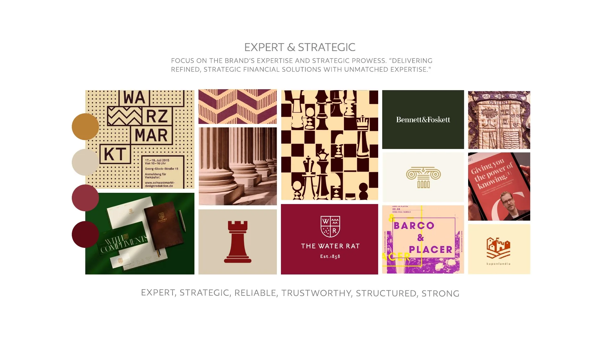
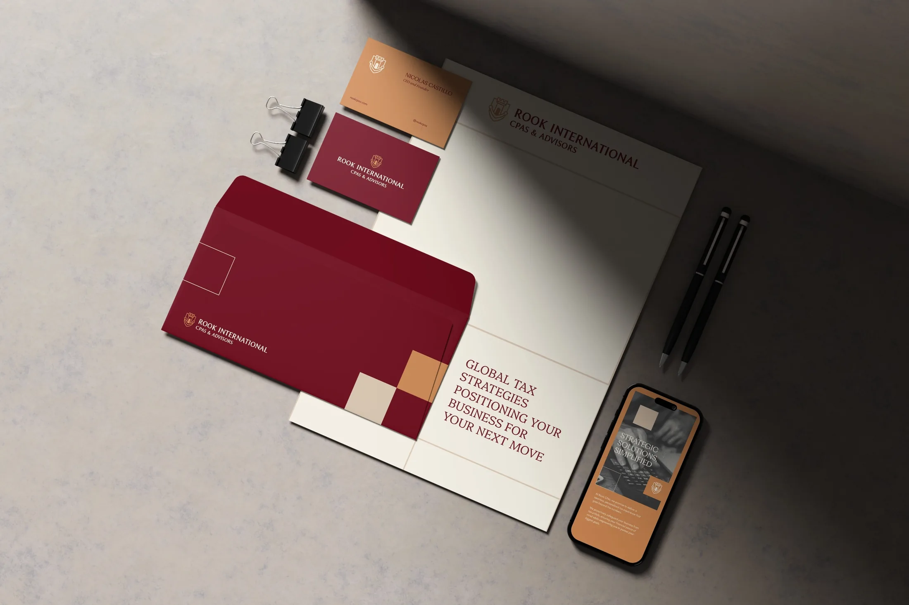
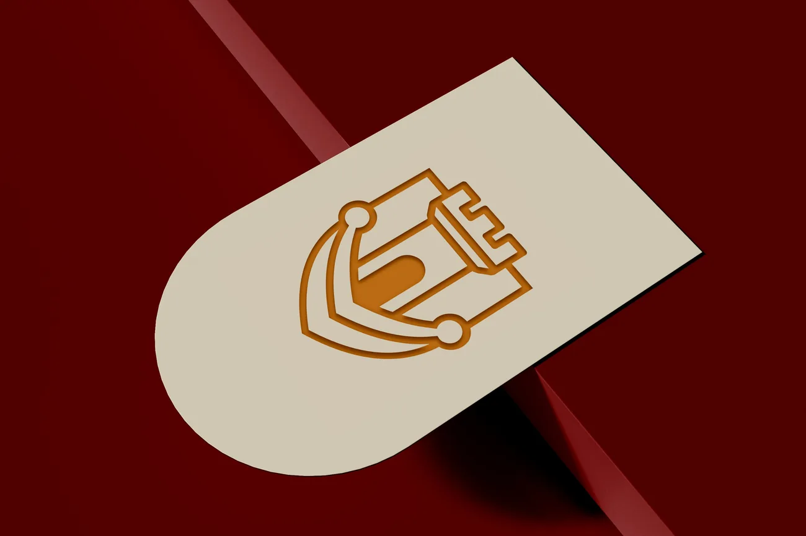
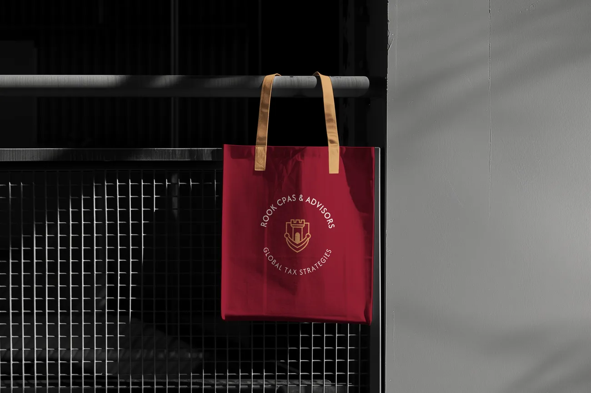
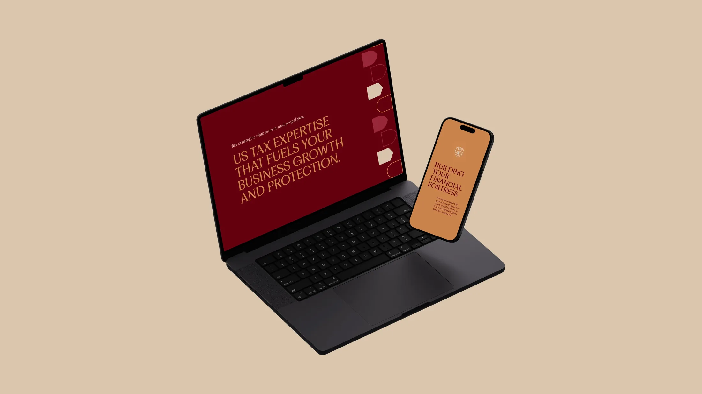
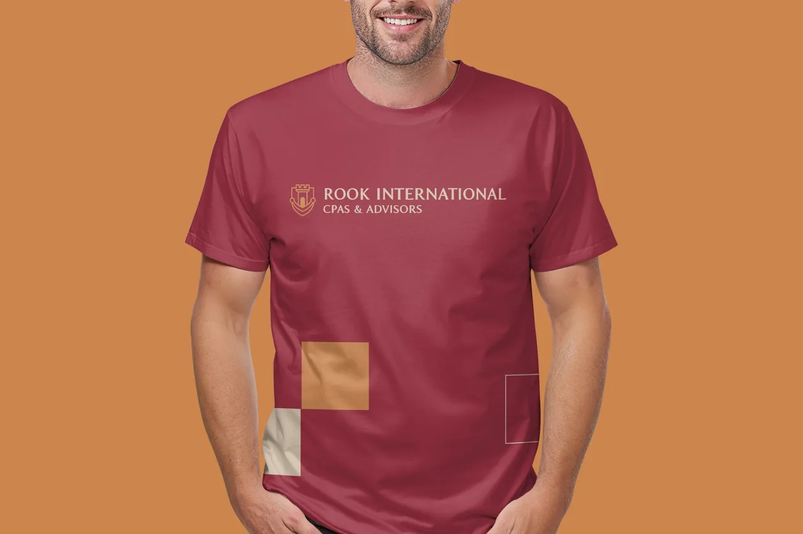
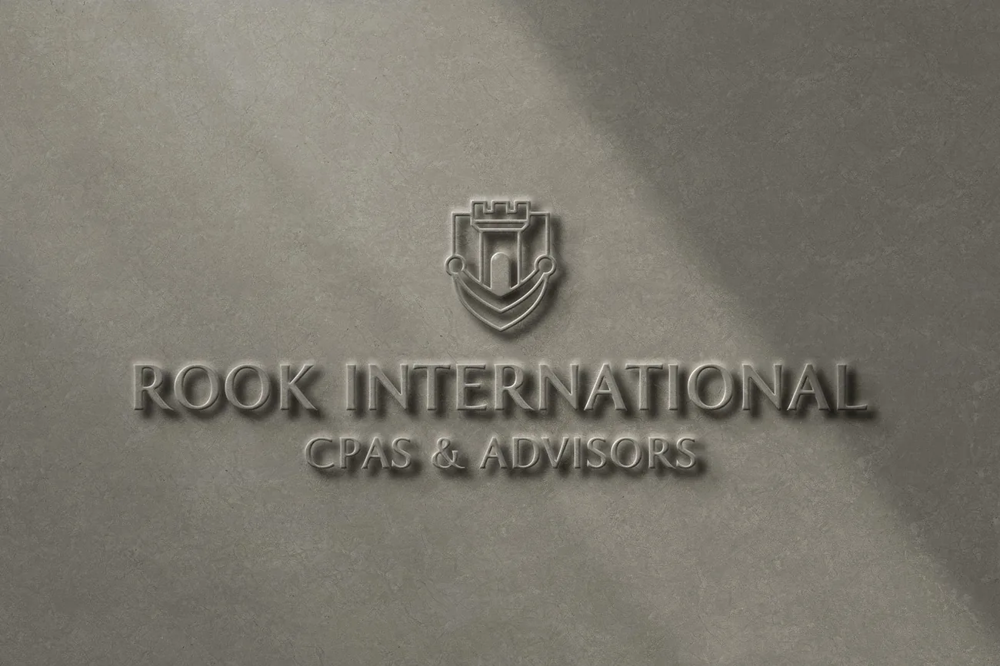
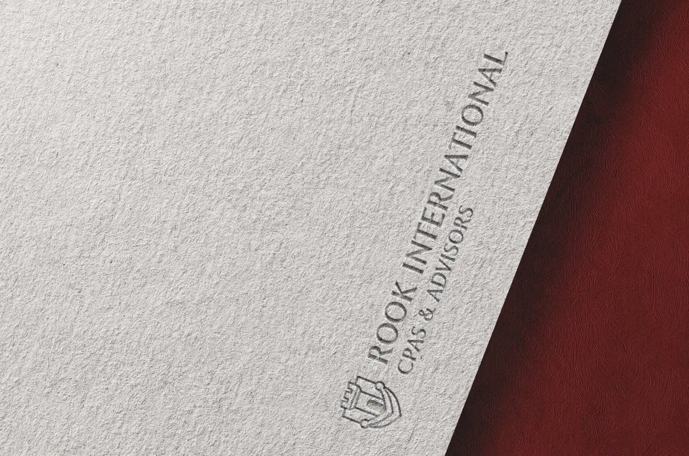

Rook International CPAs & Advisors
- Client
- Rook International CPAs & Advisors
- Year
- 2024
- Project
- Brand Identity
- What’s included
- Logo, Logo variations, Color palette, Typography, Brand elements, Brand guide, Business cards, Letterhead, Email signature, Social media templates, Presentation template, Webinar template
Rook International
Rook is a US tax firm run from Madrid by Nicolás Castillo, a CPA who is an American expat himself. He works with Americans building businesses in Europe, people with taxes on both sides of the ocean who want a strategist one step ahead of them, not just someone to file the forms.
His brief came with three clues we loved. The name comes from the rook, the chess piece, from castling, the one move where the rook trades places with the king, and from his own family name, Castillo. He also asked for a nod to the Cantabrian labarum, the old flag of northern Spain. Our job was to turn all of that into a brand that feels calm, high-end and nothing like a boring accountant.
Starting with the market:
Most firms in US expat tax looked alike: blues and greens, very traditional, very serious. That left all the warm colors free for Rook. We built three moodboards, and Nicolás's notes kept coming back to the same things: the crests, the columns and the chess pieces.

From a flag to a crest:
The icon started with the cross of the labarum, the one with a little ring at the end of each arm. We redrew it, set a tower in the middle and closed it inside a shield. On the last boards, the two lower arms became one curve that carries the tower, like the hull of a boat (Nicolás loves sailing), and the rings stayed at the tips.
What the logo says:
The castle is protection, a fortress around the client's money. The rook is strategy, the piece that moves with purpose. The symmetry stands for balance and precision, the crest for authority and the labarum for the brand's roots. And it's minimal on purpose, so it works on a business card, a screen or a wall.
Built on a grid:
Every line has the same weight. The rings, the door and the hull come from circles, and the whole crest mirrors itself on one axis. The door changed a few times along the way, from an outline to a pointed arch, until it became the solid round arch of the final mark.
One family of logos:
The main logo, a horizontal version for websites and headers, a round stamp that says Global Tax Strategies, and the icon on its own. The name is set in RRollie, a typeface drawn from a Roman inscription from the year 15 AD, which gives the letters their carved, timeless feel.
Colors from the labarum:
Deep maroon for strength, golden bronze for prestige, ivory for clarity, sandy beige to calm everything down and a rusty red for energy. Platypi does the titles, with its italic for highlights, and Afacad keeps the longer texts easy to read.
Little pieces of the brand:
Shields, arches and the cut-out shapes of chess pieces and towers. They make the patterns on the business cards, the posts and the slides.
The brand at work:
Business cards, letterhead, envelope and the rest of the stationery, plus a few places where the crest really shines, embossed on paper and carved in stone.







Templates for every week:
Posts, stories, a presentation and webinar slides, all ready in Canva, so the team can publish on their own and still look like Rook.
“Julia is the type of contractor you hope to find and work with because she makes it so easy. Her processes are smooth, direction and communication are clear, and the value she brings to a brand (particularly a fledgling one such as ours) is almost infinite because of how thoughtful her intake questionnaire is. While we thought we were partnering with her and her team for a logo and branding materials, what we actually received was so much more: a clearer direction and sense of understanding of our own brand and messaging. Prior to working with Julia, you may think you know what your company objective or mission or ‘voice’ is, but after working with her, you will be absolutely certain — plus have a beautiful visual identity. Thank you, Julia!”
Nicolás I. Castillo, CPA
Rook CPAs and International Advisors